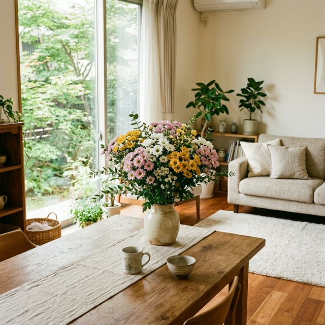

About Spray Mum / スプレーマムの魅力
長持ち、ボリュームたっぷり。
和にも洋にも合う、万能の花。
Features / スプレーマムとは
一本の茎から複数の花が咲く、華やかで経済的な花です。
適切な手入れで2〜3週間楽しめます。切り花の中でもトップクラスの長持ちさ。
Long-lasting
1本の茎に複数の花が咲くので、少ない本数でも華やか。とても経済的です。
Voluminous
和室の一輪挿しから、洋風アレンジメントまで。どんなインテリアにも自然になじみます。
Versatile design
Craftsmanship / つくる人のこだわり
豊川の自然と、生産者の丁寧な営み。
良い花は良い土から。定期的な土壌診断を行い、自然のバランスを整える「土づくり」を大切にしています。
豊川の豊かな水と温暖な気候を活かしながら、ハウス内の環境をきめ細かく整え、一年中最適な環境で花を育てています。
How to Enjoy / 飾り方ガイド
茎の切断部に空気が触れると水揚げに支障をきたします。水の中で茎を切る「水周り」をすると長持ちします。
水につかる下葉は傷みやすいので取り除きます。上葉もある程度間引くと、すっきりと涼しげに見えます。
2〜3日に一度、きれいな水に替えましょう。花瓶も洗うとさらに長く美しさを保てます。
和風に活けるなら、季節の草花や枝物と。
洋風なら、バラやガーベラと合わせて。
どんな花とも調和するのが、スプレーマムのよさです。
お近くのお花屋さんで「スプレーマム」とお伝えください。
豊川の恵みを、ぜひご家庭でお楽しみください。